China Employee Termination 2026: Pulse Control-Questions Brief for Foreign Employers
Key takeaways
- Foreign employers can improve China termination outcomes by running a fixed set of control questions before each major decision.
- The most important questions cover route legality, local interpretation, evidence coherence, payroll/tax closure, communication discipline, and closure readiness.
- Question-led governance is easy to apply across distributed teams and reduces ambiguity.
- City-level practical interpretation should be a required control question in every case.
- This brief is practical-first; legal depth appears in a secondary appendix.
What changed and why this matters now
When teams are under pressure, they often skip foundational checks and focus on visible milestones like meeting dates. A control-questions model prevents this by forcing short, high-impact validations before progression. It is particularly useful for foreign-led teams managing China cases remotely, because it creates a common language for go/hold decisions.
This run rotates to a control-questions format (distinct from rubric/sprint/card/handbook variants) to maximize Pulse readability and operational clarity.
Plain-language legal context first
China employer-initiated termination generally requires a lawful basis plus coherent evidence and compliant execution sequence. Public legal anchors include the PRC Labor Contract Law framework, implementing regulation references (including Decree No. 535 context), and Supreme People’s Court labor-dispute interpretation materials. Practical implication: even valid business intent can fail if controls are weak.
Control questions translate this into repeatable pre-action checks.
Pulse control questions (impact-first)
Question 1 — Is the chosen route legally supportable for this fact pattern?
Pass evidence: route memo with case-specific rationale and fallback path.
Hold trigger: generic route language or unresolved route assumptions.
Question 2 — Is local/city-level interpretation aligned with the route?
Pass evidence: current local interpretation memo and issue status.
Hold trigger: conflicting local guidance remains unresolved.
Question 3 — Is the evidence chronology coherent and source-owned?
Pass evidence: contradiction-free timeline ledger with document links.
Hold trigger: material contradiction or missing source ownership.
Question 4 — Is payroll/tax/social closure finalized before communication?
Pass evidence: approved final pay/severance/IIT/social pack and payment plan.
Hold trigger: unresolved payout/tax element.
Question 5 — Is communication controlled and aligned with validated facts?
Pass evidence: approved script, briefed spokesperson, deviation protocol.
Hold trigger: unbriefed manager or script drift risk.
Question 6 — Is post-event closure challenge-ready?
Pass evidence: indexed archive + retrieval test pass.
Hold trigger: incomplete index or failed retrieval test.
Why this helps foreign employers
Control questions are compact enough for daily huddles and executive updates. They reduce subjective debates and force evidence-based decisions, especially when teams across jurisdictions must align quickly.
Practical scenarios
Scenario 1: Scheduling pressure before payroll closure
A business leader pushes for rapid communication while final payout mapping remains open.
Question response: Question 4 fails; no-go.
Scenario 2: Legal route appears strong, local view diverges
National interpretation seems clear but city guidance conflicts.
Question response: Question 2 fails; route progression paused.
Scenario 3: Late contradiction appears in manager notes
Chronology changes after provisional approval.
Question response: Question 3 fails; reopen evidence reconciliation.
Role-owned SOP (question governance)
Step 1 — Assign question owners
Owners: HRBP + Legal + Payroll lead
- Define owner/backups and SLA for each question.
Step 2 — Run pre-transition question checks
Owners: designated question owners
- Mark pass/fail/open with linked evidence.
Step 3 — Enforce hold rules
Owners: cross-functional panel
- Block progression on any failed critical question.
Step 4 — Publish decision note
Owners: HR + Legal + Payroll
- Record go/hold and required remediation actions.
Step 5 — Review recurring failures
Owners: operations governance + compliance
- Analyze repeated failed questions and update controls.
Required document checklist
- Employee profile and contract context
- Route rationale memo + fallback route
- City-level interpretation memo
- Chronology/source ledger
- Script package and briefing records
- Payroll/severance/IIT/social worksheet
- Settlement/acknowledgment records
- Payment proof artifacts
- Control-question status log
- Closure memo + archive index
Exception handling playbook
- Conflicting answers across functions: issue evidence-based tie-break memo.
- New fact invalidates a prior pass: reopen relevant question and recheck.
- Owner unavailable: activate backup and preserve SLA.
- Deadline override attempt: document unresolved failed questions and risk acceptance.
- Repeated failures on same question: launch targeted process redesign.
System implementation notes
- Add structured fields for question status (pass/fail/open).
- Require evidence links for pass status.
- Auto-block downstream actions on failed critical questions.
- Track KPIs: fail frequency by question, time-to-clear, dispute correlation.
- Calibrate monthly to keep scoring and interpretations consistent.
Common mistakes and prevention
- Mistake: treating question checks as optional.
Prevention: mandatory pre-transition checks.
- Mistake: local interpretation handled informally.
Prevention: dedicated Question 2 gate.
- Mistake: payroll closure checked too late.
Prevention: hard Question 4 gate before communication.
- Mistake: communication readiness assumed.
Prevention: explicit Question 5 evidence requirement.
- Mistake: weak closure quality.
Prevention: Question 6 retrieval test requirement.
What to do now
- Deploy six control questions across all active China termination cases.
- Assign owner/backups and SLAs for each question.
- Enforce no-go on failed route/evidence/payroll/local questions.
- Add daily question status review to cross-functional standups.
- Track repeated failed questions by case type.
- Train managers on communication control requirements.
- Update question definitions monthly based on outcomes.
What to watch next
- City-level practice shifts may increase Question 2 failures.
- Case surges may stress Question 4 payroll readiness.
- Practitioner updates may tighten Question 3 evidence expectations.
FAQ
1) Why control questions instead of broad SOPs?
Questions force decision clarity at critical moments.
2) Can one failed question block progression?
Yes, for critical legal/evidence/payroll/local controls.
3) How often should questions be reviewed?
Before each major transition and after material updates.
4) Who approves final go/hold?
Cross-functional HR, legal, and payroll leads.
5) Is local interpretation always required?
Yes, because city-level practice can materially affect outcomes.
6) What is the top avoidable failure?
Proceeding while payroll or evidence questions remain unresolved.
7) How does this improve over time?
By tracking recurrent failed questions and fixing root causes.
Legal depth appendix (secondary)
This brief is grounded in official/legal and practitioner materials relevant to employer-side termination operations in China. Core anchors include the PRC Labor Contract Law framework, implementing regulation references associated with Decree No. 535 context, and Supreme People’s Court labor-dispute interpretation materials. Practitioner and payroll-context sources provide practical interpretation for foreign employers. Residual uncertainty remains city- and fact-specific and should be validated through localized professional review for live matters.
Disclaimer
This content is informational only and does not constitute legal, tax, or employment advice.
Sources
- National People’s Congress (Labor Contract Law, English text), accessed 2026-03-05: http://www.npc.gov.cn/zgrdw/englishnpc/Law/2007-12/13/content_1384064.htm
- State Council Gazette reference (implementing regulation / Decree No. 535 context), accessed 2026-03-05: https://www.gov.cn/gongbao/content/2008/content_1124615.htm
- Supreme People’s Court labor dispute interpretation update page, accessed 2026-03-05: https://www.court.gov.cn/fabu/xiangqing/243981.html
- China Briefing, Employee Termination in China, accessed 2026-03-05: https://www.china-briefing.com/news/employee-termination-in-china/
- ICLG Employment & Labour Laws and Regulations: China, accessed 2026-03-05: https://iclg.com/practice-areas/employment-and-labour-laws-and-regulations/china
- Littler ASAP analysis on China employment law developments, accessed 2026-03-05: https://www.littler.com/news-analysis/asap/key-recent-developments-chinas-employment-law-china-us-comparative-perspective
- PwC PRC Individual Income Tax summary, accessed 2026-03-05: https://taxsummaries.pwc.com/peoples-republic-of-china/individual/taxes-on-personal-income
Add-on: Control question ownership matrix
| Control question | Primary owner | Backup owner | Escalation SLA |
|---|---|---|---|
| Route supportability | Legal lead | HRBP | 24h |
| Local interpretation fit | Local counsel coordinator | Legal lead | 48h |
| Evidence coherence | HR Ops | Compliance reviewer | 24-48h |
| Payroll/tax closure | Payroll lead | Tax lead | Same day |
| Communication discipline | HR lead | Manager sponsor | Same day |
| Closure readiness | Compliance lead | Records owner | 1 business day |
Need local employment support in China?
If you need a compliance-first partner for hiring, payroll, and risk controls in China, China-Payroll.com can help evaluate the right setup.
Image Prompt Pack
Create a 16:9 hero image for article title: 'China Employee Termination 2026: Pulse Control-Questions Brief for Foreign Employers'. Scene: global operations team evaluating workforce model options for China market entry. Include motifs: decision matrix, org ch…